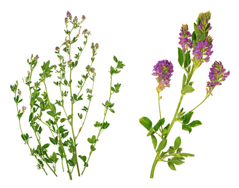

Alfalfa (Medicago sativa)

Mating & Breeding System: Alfalfa is a commonly grown forage legume. Seed is produced for propagation of forage crops, as well as more specialized uses such as sprouts for human consumption. In Canada, most alfalfa seed production takes place on the prairies, particularly in Saskatchewan.
Alfalfa flowers have 5 petals, with the lower two petals modified into a "keel" that encloses the reproductive organs. Pollinators must have the strength and ability to force their way between the keel petals to access nectar and pollen. The stamens are held under tension and when a flower visitor “trips” the flower, the pistil and stamens strike the head of the insect. This is where the pollen is deposited, and where it is likely to be dislodged by future trippings in other flowers. Tripping also breaks a membrane on the stigma, which would otherwise prevent fertilization of the ovule.
Alfalfa may be self-incompatible, or self-compatible to varying degrees. If cross-pollen is not deposited when the flower is tripped, fertilization may still occur with self-pollen.
Pollination, Quality & Yield: A flower has 10-12 ovules, but only a small proportion usually develop into seed. A flower must be tripped before fertilization can take place, so it must be visited at least once by an insect for seed to set.
Although individual plants range across the full spectrum of self-compatibility, cross-pollination will result in more pods and more seeds per pod than self-pollination, even in fully self-compatible individuals. In addition offspring resulting from self-pollination are less competitive and have lower survival rates under field conditions than offspring resulting from cross-pollination. In other words, poor pollination of the parent crop may lead to quality issues in the subsequent forage crop.
Pollination Recommendations: The alfalfa leafcutter bee is the preferred pollinator for alfalfa. Development of the alfalfa leafcutter bee industry saved the alfalfa seed industry in the 1940s and 50’s when wild pollinators could not keep up with the increase in acreage (see section on leafcutter bees). The leafcutter bee industry is still going strong today, although in recent times it has been faced with challenges associated with culturing bees in high densities (e.g., disease).
Studies show that bee densities that are too high for the available floral resources can be detrimental to both leafcutter bee reproduction and the crop, so it is important not to introduce too many bees to a given field. Recommended stocking rates are 15-50 thousand cocoons (bees) per hectare, depending on conditions and bee availability. The bees’ effectiveness can be increased by timing their deployment with the beginning of the bloom. However, it can be difficult to anticipated bloom 2-3 weeks ahead of time, which is when the bees’ emergence must be initiated.
Honey bees are reluctant pollinators of alfalfa, due to their apparent aversion to being struck forcefully in the head when the flower is tripped. Honey bees also learn to forage for nectar without tripping the flowers, which circumvents the pollination mechanism. High densities of bees (12 colonies or more per hectare) can lead to adequate pollination, and produce a desirable honey in the process. There have been efforts to breed alfalfa cultivars more friendly to honey bees (e.g., plants with stamens that protrude beyond the keel, plants that are more easily tripped, plants with higher nectar production) and these have yielded some satisfactory results.
Many wild bees are highly effective pollinators of alfalfa, and can play a significant role if fields are small and there is suitable surrounding habitat.
References
Bohart, G.E. 1957. Pollination of alfalfa and red clover. Annual Review of Entomology 2:355-380
Brown, D.E. & Bingham, E.T. 1994. Selfing in an alfalfa seed production field. Crop Science 34:1110-1112.
Brunet, J. & Stewart, C.M. 2010. Impact of bee species and plant density on alfalfa pollination and potential for gene flow. Psyche 2010 doi:10.1155/2010/201858.
Fischer, R.L. 1953. Native pollinators of alfalfa Medicago sativa L. in northern Minnesota. Minnesota Beekeeper 6:8-9.
Free, J.B. 1993. Insect Pollination of Crops, 2nd edition. Academic Press.
Kevan, P.G. 1988. Pollination, crops and bees. OMAFRA publication 72.
Pitts-Singer, T.L. & Bosch, J. 2010. Nest establishment, pollination efficiency, and reproductive success of Megachile rotundata (Hymenoptera: Megachilidae) in relation to resource availability in field enclosures. Environmental Entomology 39:149-158.
Scott-Dupree, C.D., Winston, M., Hergert, G., Jay, S.C., Nelson, D., Gates, J., Termeer, B., & Otis, G. 1995. A guide to managing bees for crop pollination. Canadian Association of Professional Apiculturists, Aylesford NS.